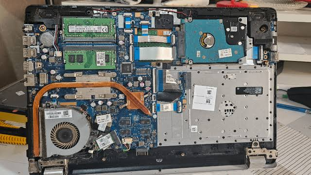

Universidad de San Carlos de Guatemala
Mantenimiento e Infraestructura de Hardware
Informe No. 1 Mantenimiento Preventivo de Hardware
Informe No. 1 Mantenimiento Preventivo de Hardware

Este sitio web reúne los entregables del proyecto de Mantenimiento e Infraestructura de Hardware, incluyendo el Manual Técnico, el Trifoliar, el Video Tutorial y el enlace al repositorio del proyecto.